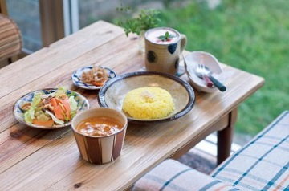

北中城村グルメスポット
ブラウマンズランチベーカリー
PLUGHMAN'S LUNCH BAKERY

食材の良さを大切にし、丁寧に時間をかけて発酵させた自家製パンは、噛めば噛むほど素材の味が口の中に広がるおいしさ。 「すべててパンありきで考えたメニュー」というパンへの愛が伝わる人気のランチプレートは、色とりどりの旬野菜がたっぷり入っていて思わず笑顔になれます。もちっとして弾力があり、それでいて軽い食感の自家製パンがおかわり自由というのもうれしいポイント。


ゆったりのんびりした時間を過ごすことができます
TEL／098-979-9097
住／北中城村安谷屋927-2 ＃1735
営／8：00～16：00（売り切れ次第終了）
朝食8：00～11：00 ランチ10：00～15：00
休／水曜
P／あり
クルミシャ
クルミ舎
ゆったりとテーブルを配した温かみのあるインテリアの向こうには、緑のお庭。2014年10月にまたひとつ、すてきカフェが誕生しました。 メニューは絶妙な辛さにクリーミーなコクがたまらない『バターチキンカレー 850円』をはじめ、３種のカレー、その時々で並ぶお菓子やドリンクなど。「どれも手づくりなので、メニューは多くはないんです」とはにかむオーナーの知念さんですが、丁寧な仕事ぶりが伺える、カラダが喜ぶ味わいです。
子どもと一緒に過ごすにも最適
TEL／098-935-5400
住／北中城村渡口1871-1 20号
営／11：00～16：00（売切れ次第終了）
休／日曜・祝祭日
P／あり
ザ・ローズガーデン
The Rose Garden

「卵はサニーサンドアップ、ベーコンはクリスピーで。パンケーキもいいけど、今日の気分はフレンチトーストかな？」 １６年続くこの店のブレックファストメニューの数々は、アメリカ人オーナー自慢の本格アメリカン。 田舎町のレストランを思わせるレトロな店内は、時間帯を問わず、懐かしのソウルフードを求めて訪れる外国人で賑わっています。 長年親しまれてきたメニューは、地元の人にとっても、どこか懐かしく無性に食べたくなる「あの味」です。
ームチーズケーキ 420円』はコーヒーと一緒に
りできます
TEL／098-932-2800
営／8：00～23：45（LO23:00）
休／無休
P／あり